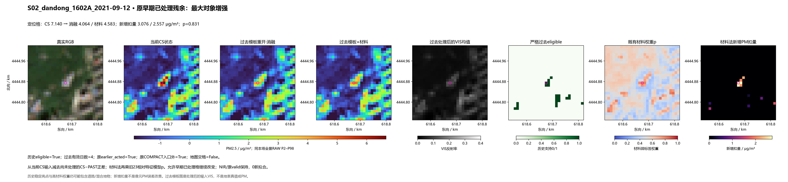
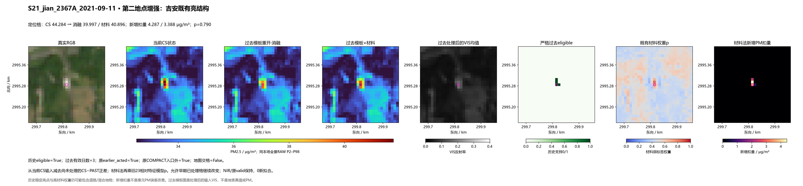
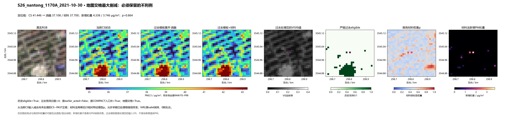
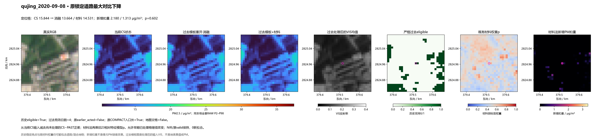
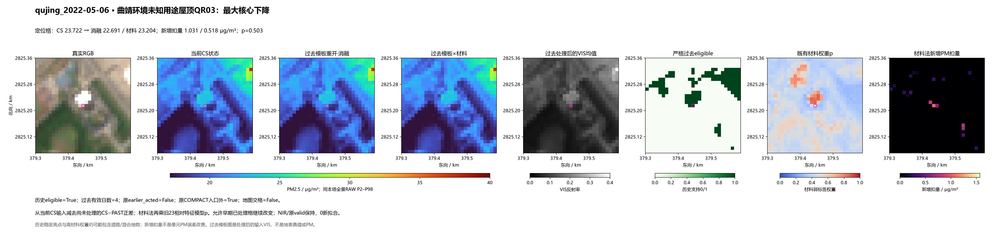
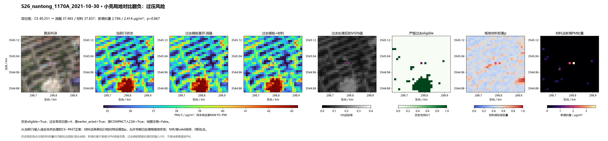
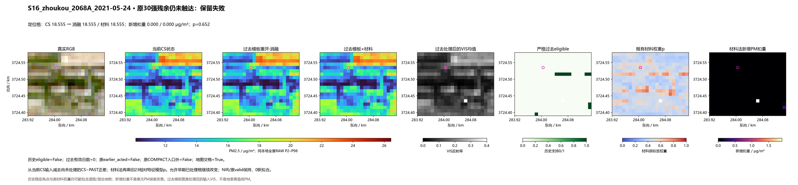
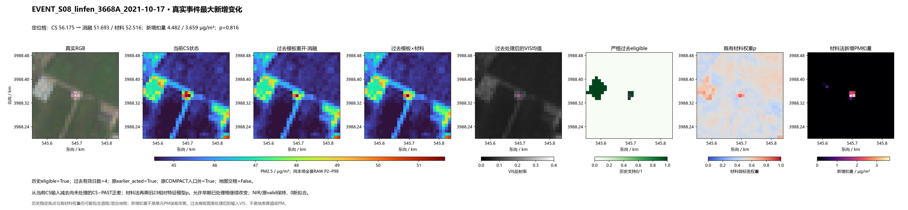

原156＋实际事件50；0新拟合。由过去稳定材料和已有输入分类器触达原COMPACT入口外的残余；两字段为材料机制与无材料消融。灰色只为原无效支持，未扩大mask。
结果及代价 · 固定公式 · 必要评价 · 全部既定残余队列 · 真实事件日期对
既定14,781个CS正残余对象中3,753个改变；材料对象最大均降2.638。原30经坐标核定为74格，触达10对象31格，不能代表全范围。材料较无材料消融减少过压，但仍有15个正局地对比翻负；南通地图交格最大降3.746。站窗/事件RMSE没有改善。
定位格新增扣量：无材料 3.0760；材料 2.5574 μg/m³。p=0.831。

定位格新增扣量：无材料 4.2867；材料 3.3877 μg/m³。p=0.790。

定位格新增扣量：无材料 4.3375；材料 3.7458 μg/m³。p=0.864。

定位格新增扣量：无材料 2.1800；材料 1.3130 μg/m³。p=0.602。

定位格新增扣量：无材料 1.0308；材料 0.5180 μg/m³。p=0.503。

定位格新增扣量：无材料 2.7864；材料 2.4144 μg/m³。p=0.867。

定位格新增扣量：无材料 0.0000；材料 0.0000 μg/m³。p=0.652。

定位格新增扣量：无材料 4.4824；材料 3.6589 μg/m³。p=0.816。
